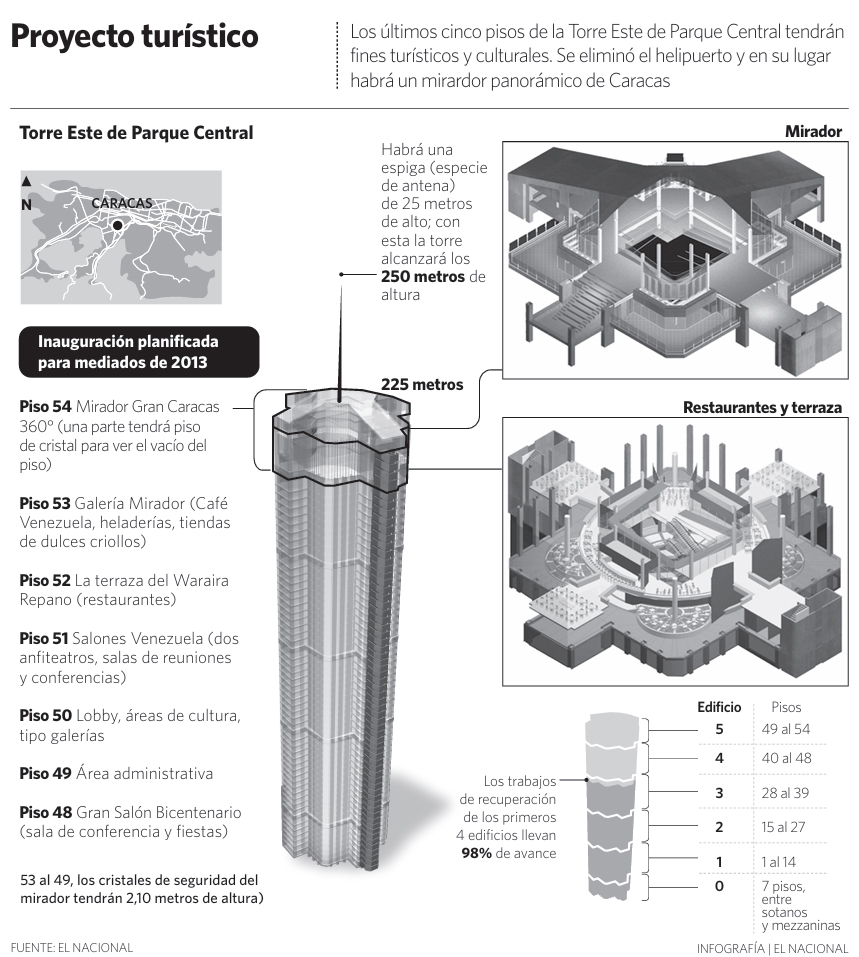

Proyecto turístico
Editorial Infographic / Architectural VisualizationContext
This infographic presents a redevelopment proposal for the East Tower of Parque Central in Caracas. The project aimed to transform the upper floors of the building into a cultural and tourist space, including observation decks, restaurants and public areas.
The objective was to explain how the building would be adapted and what functions would be assigned to each level.
Challenge
The information involved architectural structure, vertical organization and multiple functional spaces within the building. The challenge was to clearly communicate how the upper levels would be repurposed while maintaining spatial clarity.
Design Approach
The infographic combines a vertical cutaway view of the tower with detailed isometric illustrations of key areas such as the observation deck and terrace. This approach allows the reader to understand both the overall structure and the specific design of each space.
Supporting elements such as a location map and floor-by-floor descriptions provide additional context and reinforce the spatial narrative.
Information Structure
The layout is organized around a central vertical representation of the building, complemented by detailed views of the main intervention areas. A hierarchical breakdown of floors explains the function of each level, guiding the reader from general structure to specific spaces.
